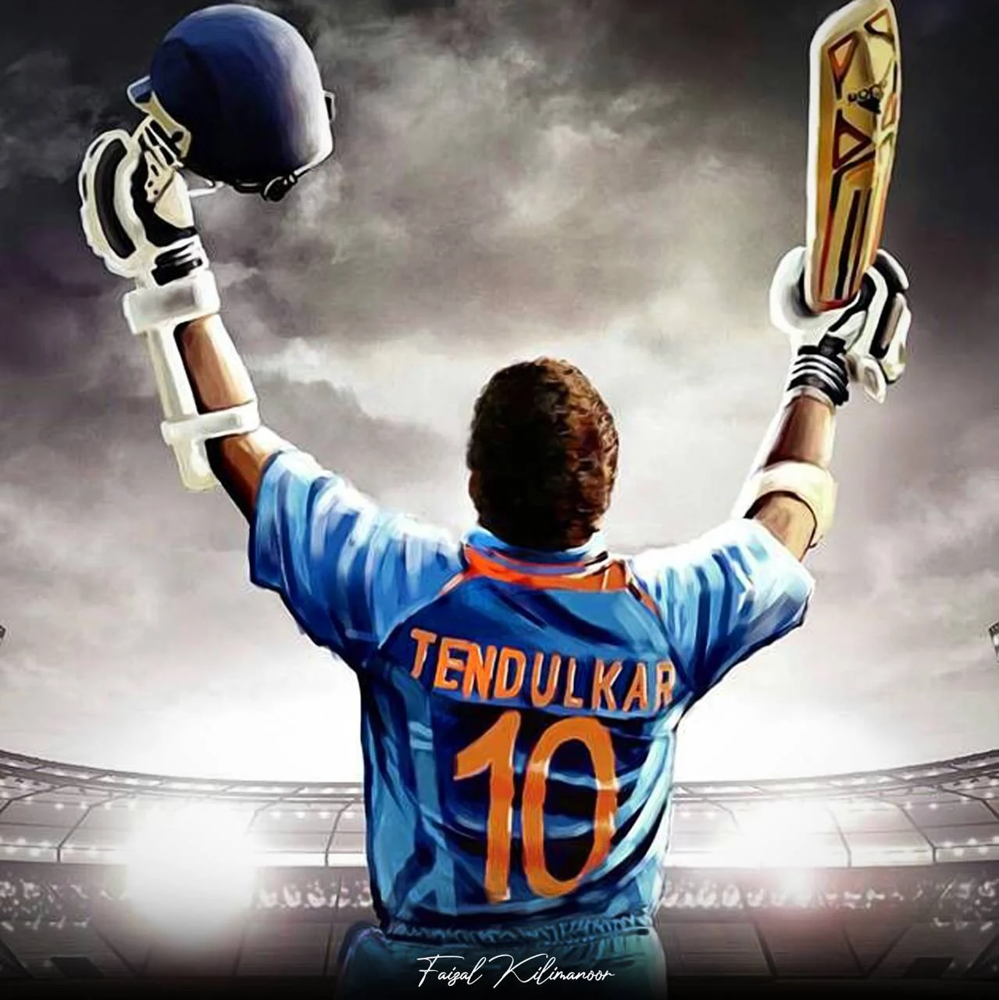
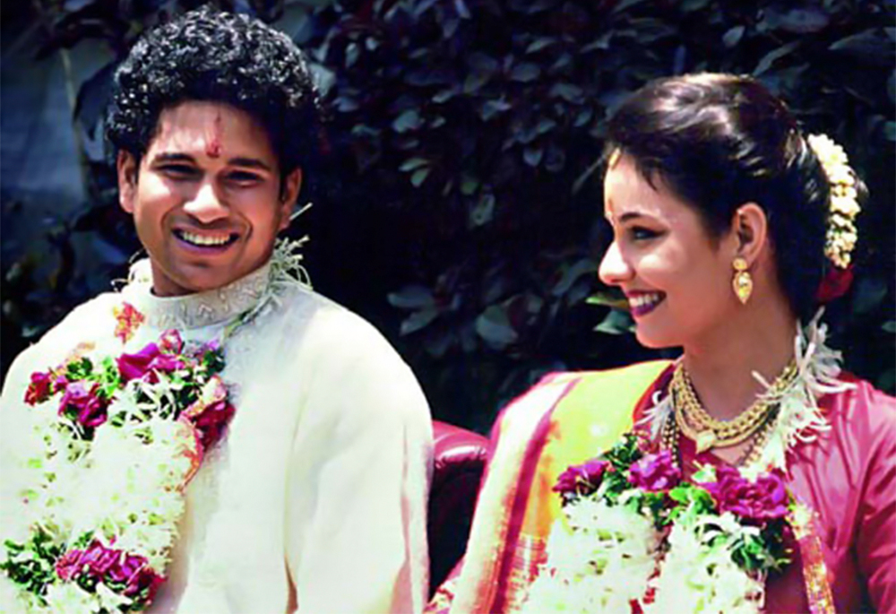

Sachin Tendulkar was born to a brahmin family on 24 April, 1973 in Dadar, Mumbai. That is he belongs to renowned Saraswat Brahmin Family. Sachin Ramesh Tendulkar earned several names including a master blaster, God of Cricket, and little master. He is considered one of the greatest batsmen in the history of cricket. Tendulkar was given his first bat when he was 11 years of age. As a 14-year-old, he used it to score 329 out of a world-record stand of 664 in a school match. A year later he scored a century on his first-class debut for Bombay (Mumbai), and at age 16 years 205 days he became India’s youngest Test (international) cricketer, making his debut against Pakistan in Karachi in November 1989. When he was 18 he scored two centuries in Australia (148 in Sydney and 114 in Perth), and in 1994 he scored 179 against the West Indies. In August 1996, at age 23, Tendulkar was made captain of his country’s team.
Sachin Tendulkar
Indian Cricketer.

Biography
He is the only batsman in world cricket to hit 100 centuries. Sachin Tendulkar, the master blaster, is the name that continues to inspire many, not only in India but also all over the world, to take up the sport. Isn't! We know that in India cricket is a religion and Sachin Tendulkar is the God. Very few cricketers, bowlers or sportsmen have gained such type of imagination, popularity as Tendulkar has.
Indian professional cricket player, considered by many to be one of the greatest batsmen of all time. In 2012 he became the first cricketer to score 100 centuries (100 runs in a single innings) in international play.
Tendulkar made history in December 2005 when he scored his record-breaking 35th century in Test play against Sri Lanka. The feat was accomplished in a total of 125 Tests and allowed Tendulkar to surpass the prolific Indian run scorer Sunil Gavaskar.
Although India was defeated in the semifinals of the 1996 World Cup, Tendulkar emerged as the tournament’s top run scorer, with 523 runs. In 1998 he was chosen for the Rajiv Gandhi Khel Ratna Award, the highest award given to an Indian athlete, for his outstanding performance in the 1997–98 season. India was defeated by Australia in the 1999 World Cup, failing to advance past the round of six, and was soundly defeated by both Australia and South Africa in series later that year. In the 2003 World Cup, however, Tendulkar helped his team advance as far as the finals. Though India was again defeated by Australia, Tendulkar, who averaged 60.2, was named the man of the tournament.
Sachin Tendulkar Wife
Sachin Tendulkar’s wife, Anjali Tendulkar is a famous personality. She is a paediatrician as well as a philanthropist. She was born to a very wealthy Gujrati family on 10 November 1967 in Mumbai, Maharashtra. Tendulkar asked Anjali to talk to his parents about their plan of getting married while he was on a tour in New Zealand. Sachin recalled at his book launch event how the thought of talking to his parents about their relationship was tougher than facing the most menacing fast bowlers. Eventually, Anjali approached his parents and the duo got engaged when the star player was just 21. After knowing each other for almost 5 years, the duo officially tied the knot on 24 May 1995 at the Jewel of India located in Worli, Mumbai. Sachin, at the time, was 22 years old.
“Don't stop chasing your dreams, because dreams do come true.”
- Sachin Tendulkar